vmd
VMD 是开源分子可视化与轨迹分析软件，支持多种分子模拟格式，可完成分子体系建模、三维结构渲染、MD 轨迹分析，常搭配 NAMD、AMBER 等工具，用于生物大分子可视化及模拟后处理研究。
版本：1.9.3
安装路径：/opt/app/vmd
操作步骤：
1、进入 vmd 安装目录，确认目录存在。
证明：命令返回 /opt/app/vmd，说明 vmd 安装目录存在。
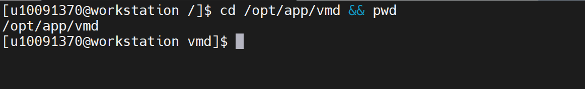
2、查看 vmd 安装目录内容，确认安装结构是否完整。
证明：返回结果中出现 bin 和 lib 目录，说明 vmd 主程序目录和依赖库目录存在，安装结构正常。
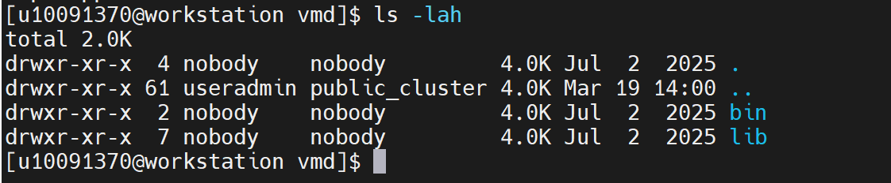
3、查看 vmd 可执行程序，确认主程序是否存在。
证明：返回结果中出现 vmd 可执行文件，且具有可执行权限，说明 vmd 主程序存在。
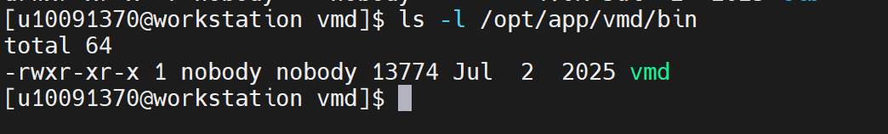
4、以文本模式启动 vmd，验证主程序是否能够正常启动。
/opt/app/vmd/bin/vmd -dispdev text
证明：返回 vmd for LINUXAMD64, version 1.9.3，同时显示 Multithreading available、Free system memory、Dynamically loaded plugins 等信息，说明 vmd 主程序启动正常。
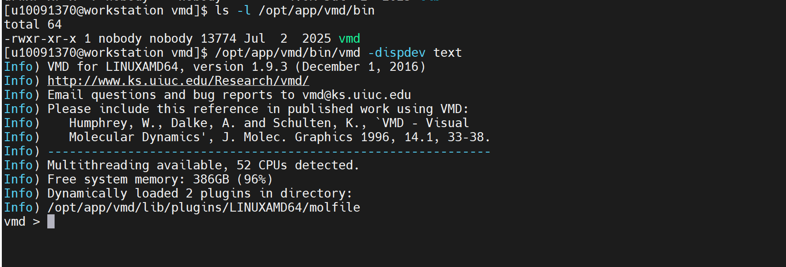
5、退出 vmd 交互界面，回到 Linux 终端。
证明：终端返回 [useradmin@ workstation ~]$ 或 [useradmin@ workstation vmd]$，说明已退出 vmd 交互界面，后续 Linux 命令可以正常执行。
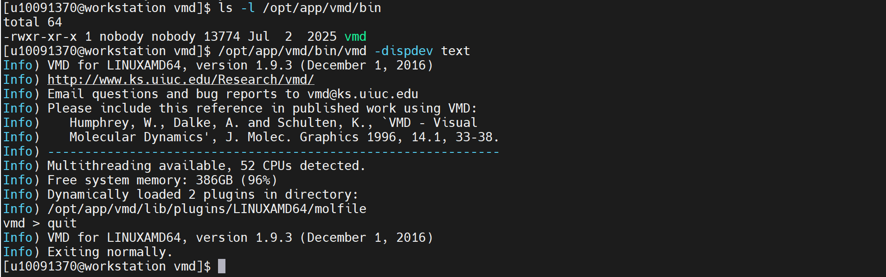
验证步骤：
6、创建 vmd 验证目录和公共归档目录。
SHARE="/home/share/验证示例文件"
WORK="$HOME/vmd_validation_case"
rm -rf "$WORK"
mkdir -p "$WORK" "$SHARE"
证明：创建 /home/useradmin/vmd_validation_case 作为本次 vmd 验证运行目录，并确认 /home/share/验证示例文件 公共目录可用于保存验证文件。
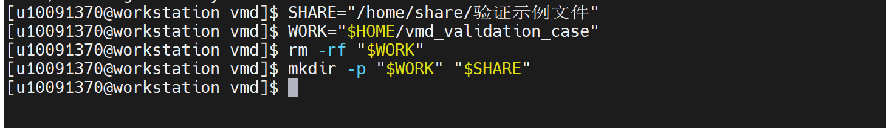
7、生成 vmd 验证用 PDB 结构文件。
1
2
3
4
5
6
7
8
9
10
11
12
13
14
15
16
17 cat > "$WORK/vmd_validation.pdb" <<'EOF'
HEADER vmd VALIDATION TEST STRUCTURE
TITLE SMALL ALANINE PDB FOR vmd TEXT MODE VALIDATION
REMARK Generated for vmd 1.9.3 validation
ATOM 1 N ALA A 1 11.104 13.207 9.447 1.00 20.00 N
ATOM 2 CA ALA A 1 12.560 13.257 9.447 1.00 20.00 C
ATOM 3 C ALA A 1 13.058 14.687 9.747 1.00 20.00 C
ATOM 4 O ALA A 1 12.327 15.632 9.507 1.00 20.00 O
ATOM 5 CB ALA A 1 13.100 12.310 10.520 1.00 20.00 C
ATOM 6 H ALA A 1 10.690 12.350 9.250 1.00 20.00 H
ATOM 7 HA ALA A 1 12.900 12.940 8.450 1.00 20.00 H
ATOM 8 HB1 ALA A 1 14.190 12.350 10.520 1.00 20.00 H
ATOM 9 HB2 ALA A 1 12.760 11.290 10.330 1.00 20.00 H
ATOM 10 HB3 ALA A 1 12.720 12.620 11.490 1.00 20.00 H
TER
END
EOF
证明：生成 vmd_validation.pdb 文件，文件内容包含 10 个原子和 1 个 ALA 残基，可用于 vmd 结构加载验证。
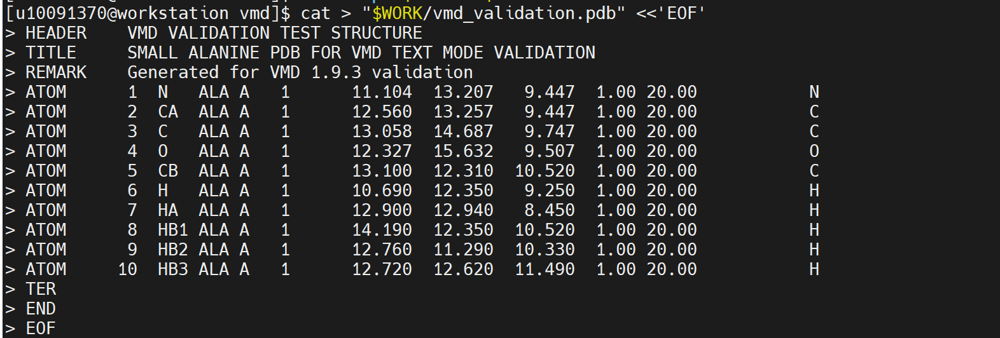
8、生成 vmd TCL 分析脚本。
1
2
3
4
5
6
7
8
9
10
11
12
13
14
15
16
17
18
19
20
21
22
23
24
25
26
27
28
29
30
31
32
33
34
35
36
37
38
39
40
41
42
43
44
45
46
47
48
49
50
51
52 cat > "$WORK/vmd_analysis_validation.tcl" <<'EOF'
set pdb_file [file join $work_dir "vmd_validation.pdb"]
set work_dir [file normalize "$env(HOME)/vmd_validation_case"]
set out_pdb [file join $work_dir "vmd_validation_checked.pdb"]
set report_file [file join $work_dir "vmd_validation_report.txt"]
puts "vmd analysis validation started"
if {![file exists $pdb_file]} {
puts "validation_status = failed"
puts "error = input PDB file not found"
quit
}
set molid [mol new $pdb_file type pdb waitfor all]
if {$molid < 0} {
puts "validation_status = failed"
puts "error = failed to load PDB file"
quit
}
set all [atomselect $molid "all"]
set protein [atomselect $molid "protein"]
set num_atoms [$all num]
set num_protein_atoms [$protein num]
set residues [lsort -unique [$all get resid]]
set residue_count [llength $residues]
set center [measure center $all]
set minmax [measure minmax $all]
if {$num_atoms <= 0} {
puts "validation_status = failed"
puts "error = PDB file contains no atoms"
quit
}
$all writepdb $out_pdb
set fh [open $report_file w]
puts $fh "vmd validation report"
puts $fh "input_pdb = $pdb_file"
puts $fh "output_pdb = $out_pdb"
puts $fh "atom_count = $num_atoms"
puts $fh "protein_atom_count = $num_protein_atoms"
puts $fh "residue_count = $residue_count"
puts $fh "center = $center"
puts $fh "minmax = $minmax"
puts $fh "validation_status = completed"
close $fh
puts "input_pdb = $pdb_file"
puts "output_pdb = $out_pdb"
puts "report_file = $report_file"
puts "atom_count = $num_atoms"
puts "protein_atom_count = $num_protein_atoms"
puts "residue_count = $residue_count"
puts "validation_status = completed"
puts "vmd analysis validation finished"
quit
EOF
证明：生成 vmd_analysis_validation.tcl 分析脚本，用于加载 PDB 文件、统计原子数量、残基数量、计算结构中心和坐标范围，并输出检查后的 PDB 文件和验证报告。
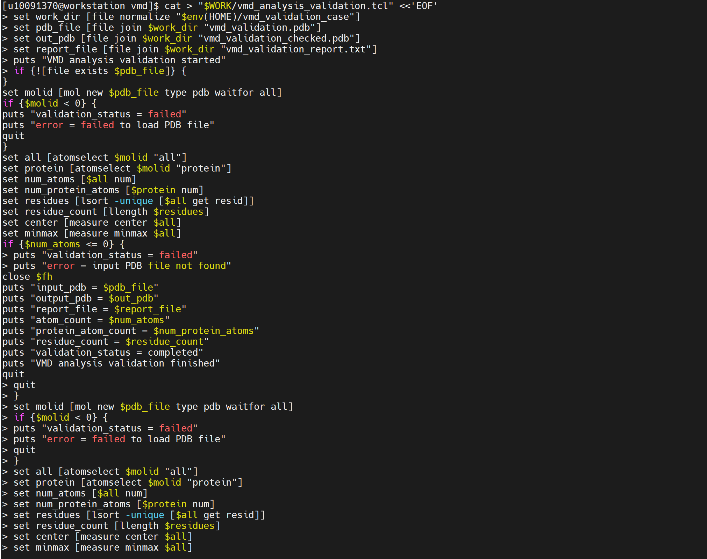
9、检查验证文件是否生成。
ls -lh "$WORK/vmd_validation.pdb"
ls -lh "$WORK/vmd_analysis_validation.tcl"
head -20 "$WORK/vmd_validation.pdb"
证明：返回结果中能够看到 vmd_validation.pdb 和 vmd_analysis_validation.tcl 文件，且 PDB 文件内容可正常查看，说明验证输入文件和分析脚本已准备完成。
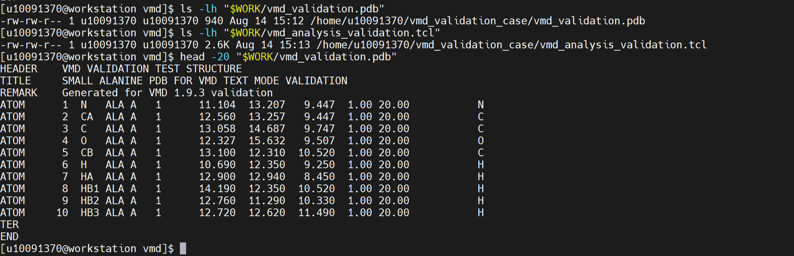
10、执行 vmd 文本模式分析验证。
/opt/app/vmd/bin/vmd -dispdev text -e "$WORK/vmd_analysis_validation.tcl" 2>&1 | tee "$WORK/vmd_validation_run.log"
证明：vmd 正常启动，返回 vmd for LINUXAMD64, version 1.9.3，并成功使用 pdb 插件加载 /home/useradmin/vmd_validation_case/vmd_validation.pdb 文件。日志中出现 Atoms: 10、Bonds: 9、Residues: 1、Protein: 1，说明 vmd 能够正常读取 PDB 结构文件并完成结构分析。
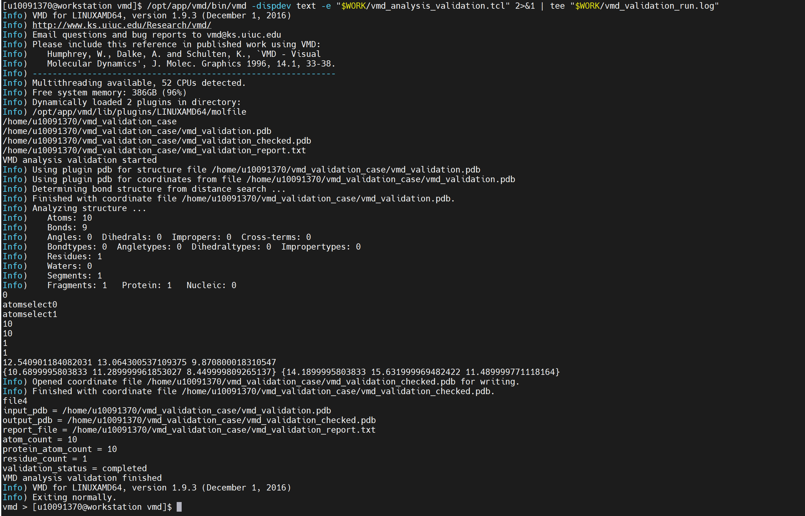
11、查看 vmd 分析报告。
cat "$WORK/vmd_validation_report.txt"
证明：报告中出现 atom_count = 10、protein_atom_count = 10、residue_count = 1、validation_status = completed，说明 vmd 成功完成 PDB 结构加载、原子选择、残基统计、结构分析和报告输出。
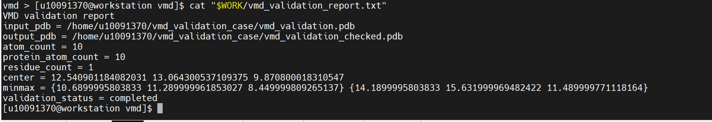
12、检查 vmd 输出结果文件。(需要管理员权限，操作可不执行步骤仅参考)
ls -lh "$WORK/vmd_validation_checked.pdb"
ls -lh "$WORK/vmd_validation_report.txt"
ls -lh "$WORK/vmd_validation_run.log"
证明：目录下生成 vmd_validation_checked.pdb、vmd_validation_report.txt、vmd_validation_run.log 文件，说明 vmd 分析脚本运行后成功输出检查后的 PDB 文件、验证报告和运行日志。
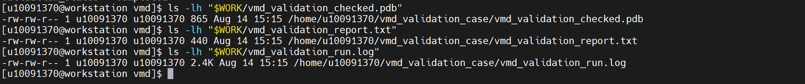
13、归档 vmd 验证文件到公共目录。
cp "$WORK/vmd_validation.pdb" "$SHARE/"
cp "$WORK/vmd_analysis_validation.tcl" "$SHARE/"
cp "$WORK/vmd_validation_checked.pdb" "$SHARE/"
cp "$WORK/vmd_validation_report.txt" "$SHARE/"
cp "$WORK/vmd_validation_run.log" "$SHARE/"
证明：vmd 验证输入文件、分析脚本、输出结构文件、验证报告和运行日志已保存到 /home/share/验证示例文件 目录，便于后续复测和验收查看。
14、查看公共目录中的验证结果文件。
ls -lh "$SHARE/vmd_validation.pdb"
ls -lh "$SHARE/vmd_analysis_validation.tcl"
ls -lh "$SHARE/vmd_validation_checked.pdb"
ls -lh "$SHARE/vmd_validation_report.txt"
ls -lh "$SHARE/vmd_validation_run.log"
证明：公共目录中存在 vmd_validation.pdb、vmd_analysis_validation.tcl、vmd_validation_checked.pdb、vmd_validation_report.txt、vmd_validation_run.log 等文件，说明 vmd 验证算例及结果已完成归档。
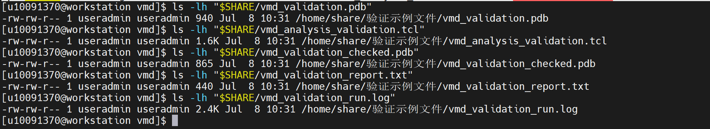
15、提取关键验证结果。
grep -En "vmd for LINUXAMD64|Atoms: 10|Residues: 1|Protein: 1|atom_count = 10|protein_atom_count = 10|residue_count = 1|validation_status = completed|vmd analysis validation finished|Exiting normally" "$SHARE/vmd_validation_run.log" "$SHARE/vmd_validation_report.txt"
证明：返回结果包含 vmd for LINUXAMD64, version 1.9.3、Atoms: 10、Residues: 1、Protein: 1、atom_count = 10、protein_atom_count = 10、residue_count = 1、validation_status = completed、vmd analysis validation finished、Exiting normally 等关键内容，说明 vmd 主程序启动、PDB 结构加载、TCL 脚本分析和结果输出均正常完成。
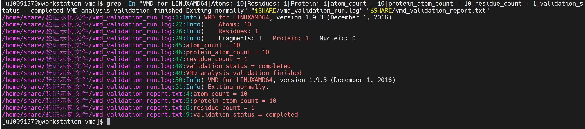